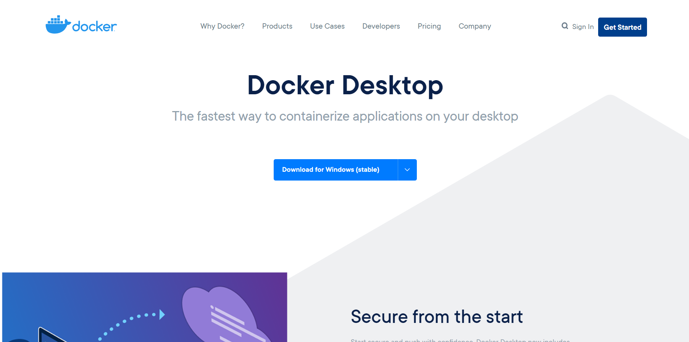
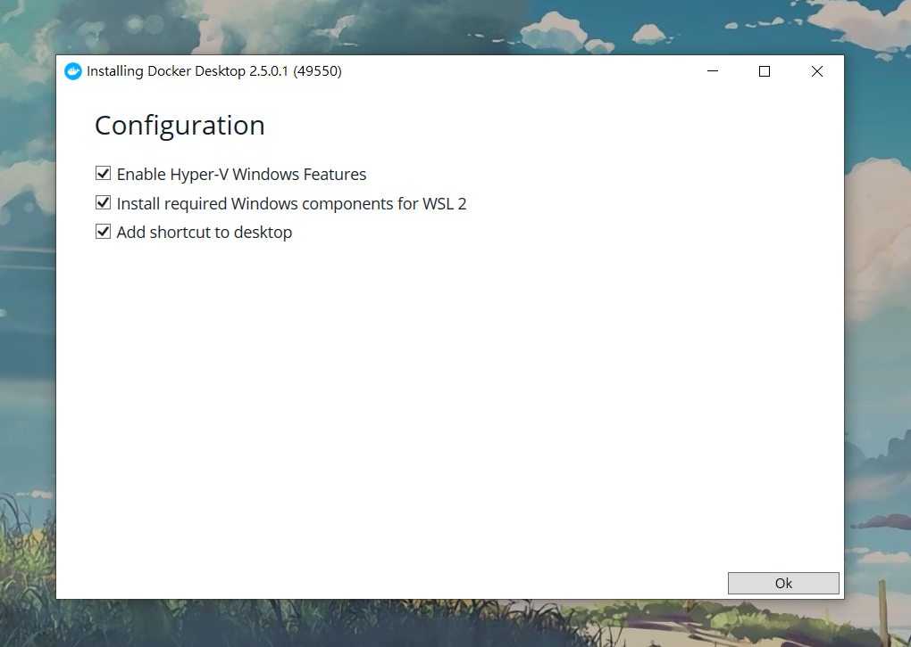
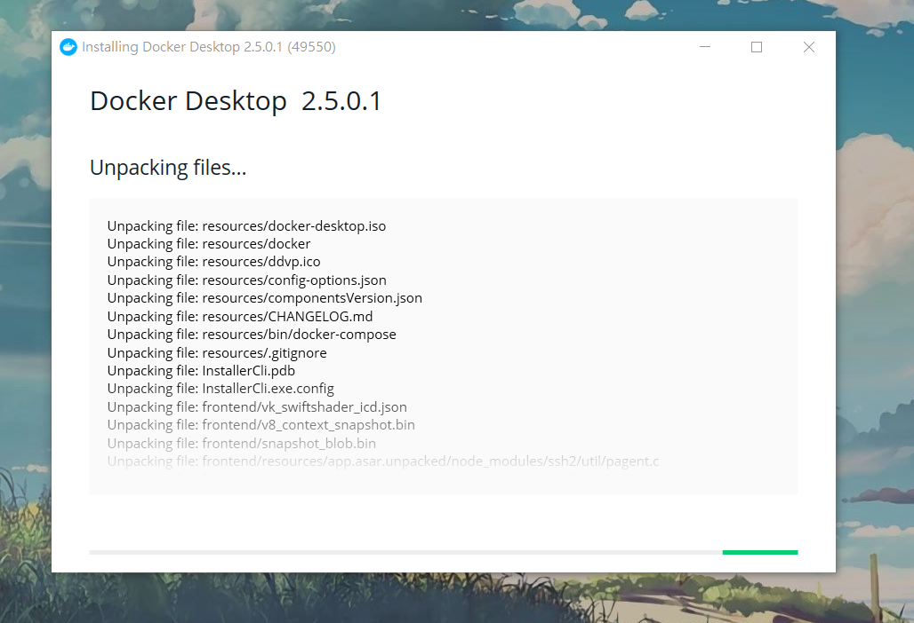
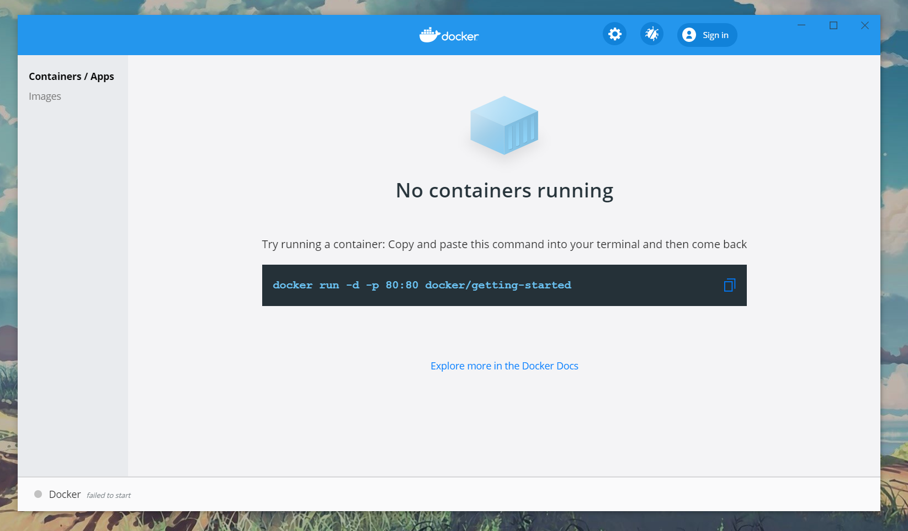
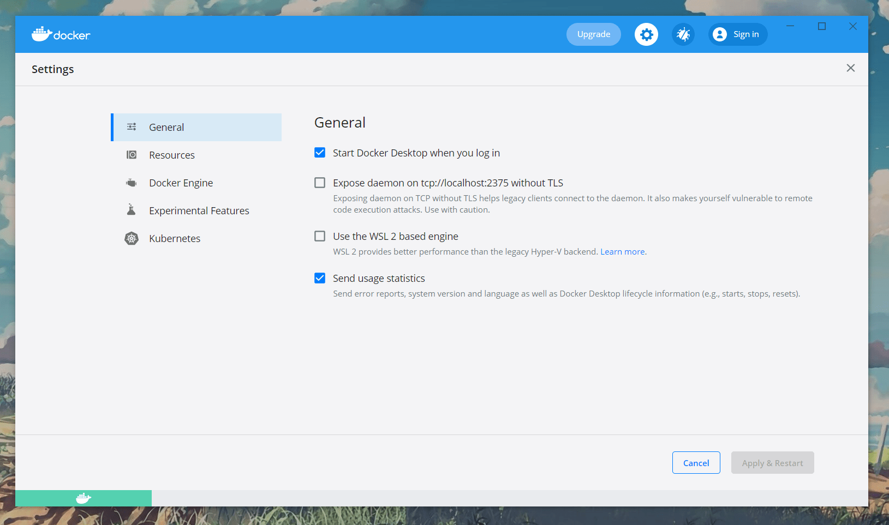
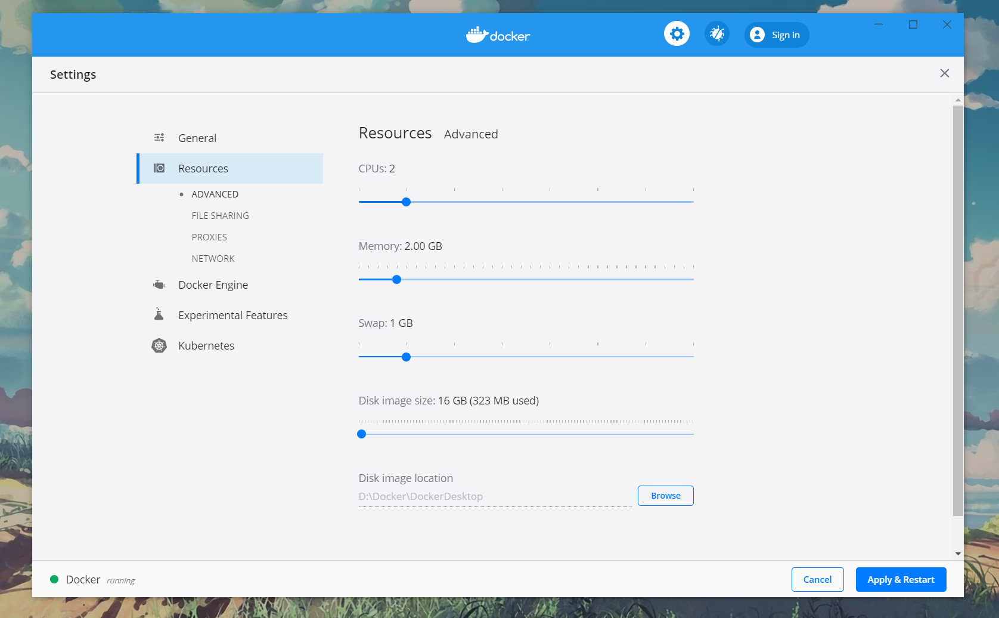
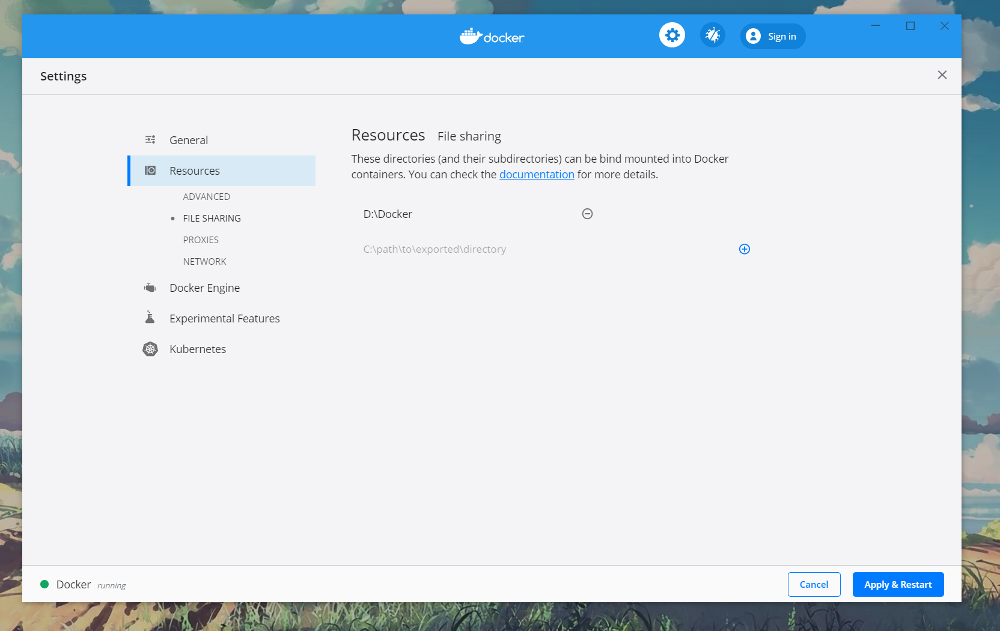

Docker教學1：在Windows Docker安装教學、初步設定
2020-12-04

在Windows上詳細的Docker安装。相信工程師在安裝開發環境常常遇到作業系統版本不同、環境變數不同、相依套件未正確安裝，導致程式無法正常執行，處理這些環境設定往往浪費了許多時間，自從有了Docker，我考試都考一百分，痾...我是說這些問題都可以輕鬆解決了，現在我就來教大家快速的安裝使用Docker吧!
前言
什麼是Docker？
轉至維基百科
Docker 是一個開放原始碼軟體，是一個開放平台，用於開發應用、交付（shipping）應用、執行應用。 Docker允許使用者將基礎設施（Infrastructure）中的應用單獨分割出來，形成更小的顆粒（容器），從而提高交付軟體的速度。
Docker容器與虛擬機器類似，但二者在原理上不同。Docker容器是將作業系統層虛擬化，虛擬機器則是虛擬化硬體，因此容器更具有可攜式性、高效地利用伺服器。 容器更多的用於表示 軟體的一個標準化單元。由於容器的標準化，因此它可以無視基礎設施（Infrastructure）的差異，部署到任何一個地方。另外，Docker也為容器提供更強的業界的隔離相容。
有興趣的可以點 Docker(維基百科) 瞭解完整說明。
簡單說使用Docker可以快速地建立開發、測試環境，或是直接作為應用程式部署之環境。
如何安裝Docker
-
前往官網去下載安裝檔
點我前往官網  ▲官網示意圖
-
下載後開始安裝吧！勾選三個選項

-
等待安裝完成...

- 安裝完成後開啟Docker，看到以下畫面表示安裝完成

-
General設定，按照以下選項勾選

-
ADVANCED設定，這邊是設定Docker的資源

- FILE SHARING設定，設定Docker使用空間，開放路徑權限給Docker存取

結論
這樣Docker就安裝完成囉，接下來可以開始建立開發環境的容器了，接下來會推出一篇教學如何建立容器的文章，敬請期待。